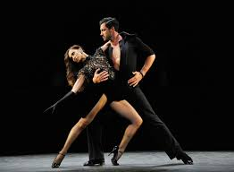

American DancesAmerican dances tend to be energetic and dynamic, just like American culture in general. Lindy Hop was founded in the African-American community of the 1920s. Sociologist Katrina Hazzard-Donald notes that African-American influences are readily observable, in particularly the style of leg movements and the establishment of a "perimeter of dance". The Foxtrot is a more sedate version, based on the six-count, "1-and-2-and-rock step" (1-and-2-and-foxtrot) step. |